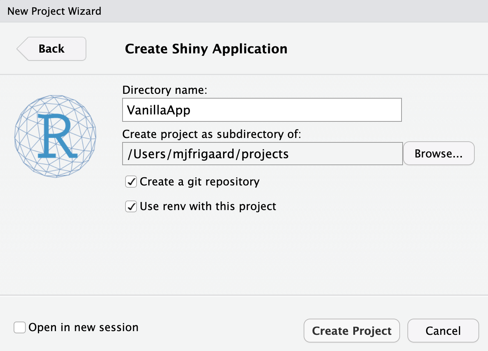
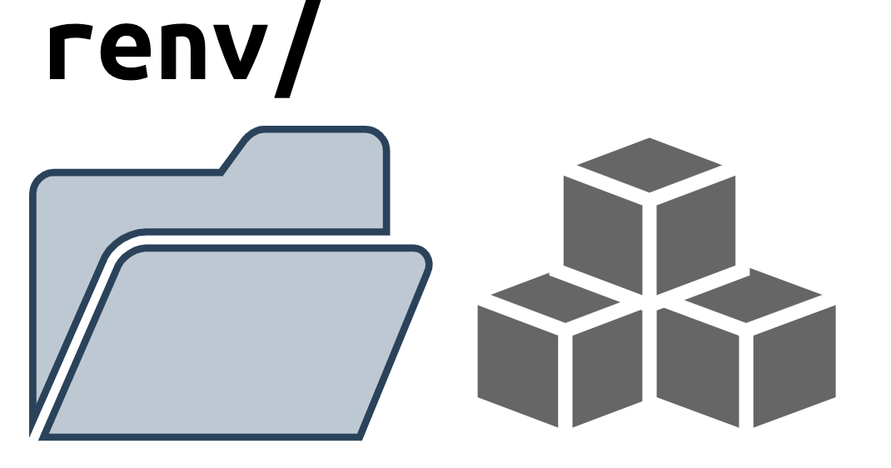
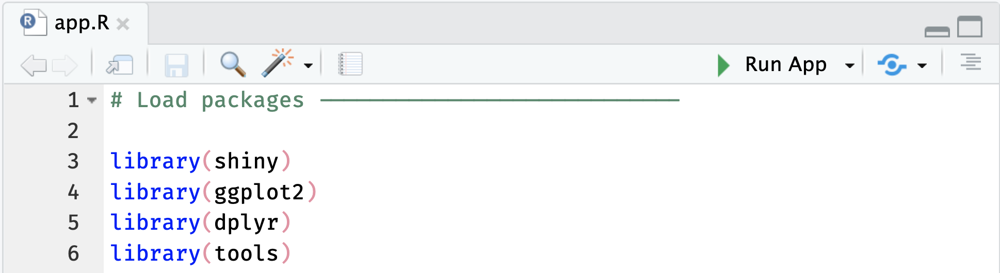

install.packages("shiny")
library(shiny)Shiny frameworks (part 1, vanilla shiny)
shiny
code
packages
This post is the first in a series demonstrating how to build shiny apps using a variety of frameworks. I will focus on three technical areas: Start, Build, and Use.
Start covers the steps required to begin building a shiny app with the framework (from the console and IDE), and any additional packages or dependencies.
Build covers the development process, which includes writing and storing code, data, external resources (like CSS or JavaScript), testing, etc.
Use shows how developers can launch their application using the given framework/package locally (i.e., within the RStudio (Posit) IDE), common workflow tips, and anything else to consider while building the application.
This series was inspired by a Medium article that provided excellent guidance when considering shiny application frameworks. The author compared a ‘vanilla shiny’ (bare-bones shiny application), golem, leprechaun, and rhino across a series of dimensions (framework reliability, target type of developer, overall developing experience, etc.).
I’ll be covering the three areas mentioned above, and also be comparing a shiny built as an R package (i.e., devtools and usethis). The GitHub repo with all shiny app setups is here.
A shiny app
VanillaApp: a bare-bones shiny app
A lot of shiny apps being their lives as single app.R file, but few stay that way. Nonetheless, it’s nice to know you’re always only a few lines of R code away from creating a web application.
Start
Creating a new ‘vanilla’ shiny app from RStudio’s New Project Wizard gives the following default options:

When we create VanillaApp, we see a folder with the following files:
VanillaApp/
├── VanillaApp.Rproj
├── app.R
├── renv
└── renv.lock
2 directories, 3 filesBuild
The code for the VanillaApp app is in app.R (it comes from the RStudio shiny tutorial, “Building web applications with Shiny”).
Click on Code to view code in app.R
Code
# Define UI ------------
ui <- fluidPage(
titlePanel(title = "movies data app (demo)"),
shiny::sidebarLayout(
shiny::sidebarPanel(
shiny::selectInput(
inputId = "y",
label = "Y-axis:",
choices = c(
"IMDB rating" = "imdb_rating",
"IMDB number of votes" = "imdb_num_votes",
"Critics Score" = "critics_score",
"Audience Score" = "audience_score",
"Runtime" = "runtime"
),
selected = "audience_score"
),
shiny::selectInput(
inputId = "x",
label = "X-axis:",
choices = c(
"IMDB rating" = "imdb_rating",
"IMDB number of votes" = "imdb_num_votes",
"Critics Score" = "critics_score",
"Audience Score" = "audience_score",
"Runtime" = "runtime"
),
selected = "critics_score"
),
shiny::selectInput(
inputId = "z",
label = "Color by:",
choices = c(
"Title Type" = "title_type",
"Genre" = "genre",
"MPAA Rating" = "mpaa_rating",
"Critics Rating" = "critics_rating",
"Audience Rating" = "audience_rating"
),
selected = "mpaa_rating"
),
shiny::sliderInput(
inputId = "alpha",
label = "Alpha:",
min = 0, max = 1,
value = 0.5
),
shiny::sliderInput(
inputId = "size",
label = "Size:",
min = 0, max = 5,
value = 2
),
shiny::textInput(
inputId = "plot_title",
label = "Plot title",
placeholder = "Enter plot title"
)
),
shiny::mainPanel(
shiny::tags$br(),
shiny::tags$blockquote(
shiny::tags$em(
shiny::tags$h6("The code for this application comes from the ",
shiny::tags$a("Building web applications with Shiny",
href = "https://rstudio-education.github.io/shiny-course/"),
"tutorial"))),
shiny::plotOutput(outputId = "scatterplot")
)
)
)
# Define server -------
server <- function(input, output, session) {
output$scatterplot <- shiny::renderPlot({
plot <- point_plot(
df = movies,
x_var = input$x,
y_var = input$y,
col_var = input$z,
alpha_var = input$alpha,
size_var = input$size
)
plot +
ggplot2::labs(
title = input$plot_title,
x = stringr::str_replace_all(tools::toTitleCase(input$x), "_", " "),
y = stringr::str_replace_all(tools::toTitleCase(input$y), "_", " ")
)
})
}
# Create App ------------------
shiny::shinyApp(ui = ui, server = server)This is a fairly simple application, but as we can see, it imports data (movies.RData) and a requires a helper function stored in utils.R.
Click on Code to view code in utils.R
Code
# pkgs -----
library(ggplot2)
# point_plot -----
point_plot <- function(df, x_var, y_var, col_var, alpha_var, size_var) {
ggplot2::ggplot(
data = df,
ggplot2::aes(
x = .data[[x_var]],
y = .data[[y_var]],
color = .data[[col_var]]
)
) +
ggplot2::geom_point(alpha = alpha_var, size = size_var)
}In my project, I can drop movies.RData and utils.R and these in the top-level folder.
VanillaApp/
├── VanillaApp.Rproj
├── app.R
├── movies.RData
├── renv
├── renv.lock
└── utils.R
2 directories, 5 filesrenv/
renv

renv records the version of R + R packages being used in a project, and provides tools for reinstalling the declared versions of those packages in a project
The renv folder and renv.lock file store the R version and package dependencies for my app. This is evident by the R-4.2 under renv/library and renv/sandbox in the folder tree above.
To keep renv/ updated, when I install a package with install.packages(), I also need to make sure to include a call to renv::snapshot().
See the example with shiny, ggplot2, dplyr and tools below:
# install packages
install.packages(c("shiny", "ggplot2", "dplyr", "tools"))Installing shiny [1.7.4] ...
OK [linked cache]
# Installing <package> [version] ..
# OK [linked cache]
# Installing <package> [version] ..
# OK [linked cache]
# Installing <package> [version] ..
# OK [linked cache]
Installing dplyr [1.1.0] ...
OK [linked cache]renv::snapshot() records the packages it in renv.lock file.
# save declared versions of packages
renv::snapshot()* Lockfile written to '~/projects/VanillaApp/renv.lock'.Read more about getting started with renv and using renv in package development
Use
To use VanillaApp, we can click on Run App in the app.R file:

VanillaAppRecap
VanillaApp is now a functioning shiny app, but it’s difficult to scale in it’s current structure. As the app codebase grows in complexity, the app.R (or ui.R and server.R) might reach thousands of lines of code.
In the next post, I’ll cover developing a shiny app as an R package.